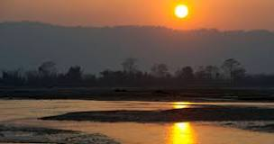

The district takes its name from the Chitwan Valley, one of Nepal's Inner Terai valleys between the Mahabharat and Siwalik ranges, both considered foothills of the Himalayas. Chitwan is one of the few remaining undisturbed vestiges of the Terai region, which formerly extended over the foothills of Nepal.
